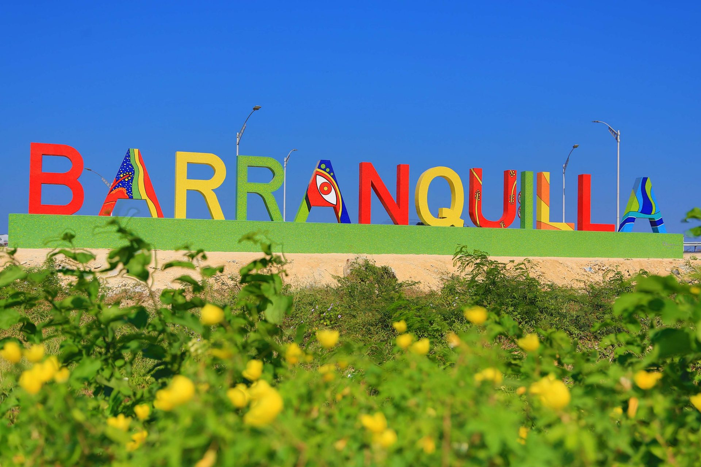

Seguridad y Convivencia Ciudadana
Barranquilla es una de las ciudades más importantes de Colombia y se destaca por su desarrollo económico, cultural y social. Sin embargo, como ocurre en muchas ciudades del país, algunos barrios enfrentan problemas relacionados con la seguridad ciudadana y la convivencia entre vecinos.
La seguridad ciudadana es un elemento fundamental para el bienestar de la población. Cuando los ciudadanos se sienten seguros pueden desarrollar sus actividades cotidianas, estudiar, trabajar y disfrutar de los espacios públicos con tranquilidad.
En este sitio web se analiza la problemática de la seguridad ciudadana en los barrios de Barranquilla, sus principales causas, consecuencias y algunas propuestas que pueden contribuir a mejorar la convivencia y la participación comunitaria.

Programas de seguridad ciudadana
Frentes de seguridad
Vecinos organizados que colaboran con la policía para prevenir delitos.
Cámaras de vigilancia
Monitoreo en puntos estratégicos para mejorar la respuesta ante delitos.
Participación comunitaria
Programas sociales y educativos que fortalecen la convivencia.